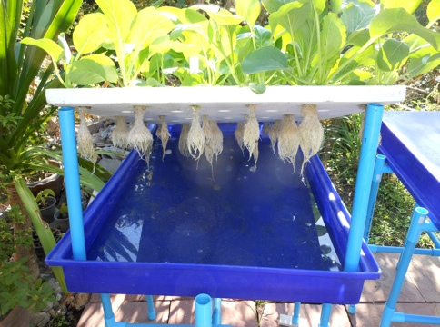
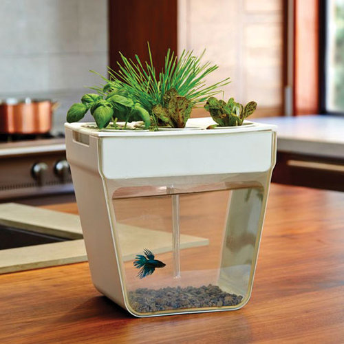

This method is to put plants into a nutrient solution container. The water is still while pumps can be installed to provide oxygen to the roots. This pumping and eliminate algae growth and insects growth, while lights must be preveted from reaching the roots by covering the container. The nutrient solution has to be changed every week or two to ensure it has the correct amount of nutrients.
 